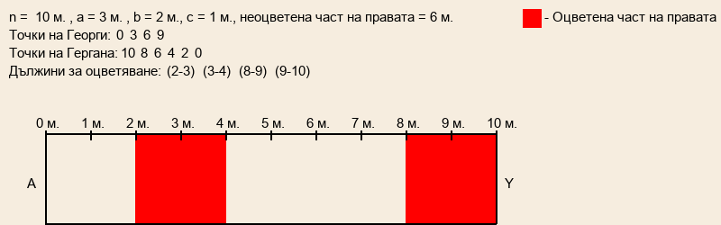

Segments Task
Условие:
Правата AY е с дължина n метра. Като започнал от началото на правата A, Георги отбелязал върху правата на всеки a метра по една точка. Като започнала от края на правата Y, Гергана отбелязала върху отсечката на всеки b метра по една точка. След това двамата намерили всички такива двойки от отбелязаните точки, за които разстоянието между точките в двойката е равно на c метра и свързали за всяка такава двойка точките й с червена отсечка. Напишете програма segments, която извежда дължината в метри на неоцветената в червено част от правата AY.
